BINARY NINJA · PRESSURE PAD + GRAVITY LIFT · 17 OCTOBER 2026Production browser captures: real public custom multiplayer input, editor physics and the full DEADLOCK solution.Compact electronic machinery. Existing physics, controller logic, payload art and level geometry preserved.
A complete pad cycle and sustained powered animation, from actual walking contact. Normal speed; playback is opt-in.
A complete lift power cycle from the same accepted pressure-pad contact. Normal speed; playback is opt-in.
Real transport from entry through the upper hover region. Normal speed; playback is opt-in.
Removing both weights ends lift power and the free cargo falls. Normal speed; playback is opt-in.
Full-room solution: FEED release, personnel relay travel, manual HATCH catch. Normal speed; playback is opt-in.
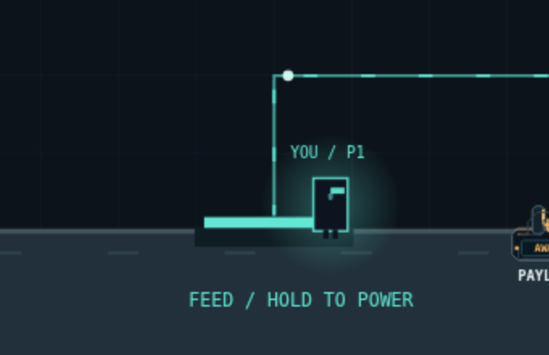
Production baseline c6dcb35.
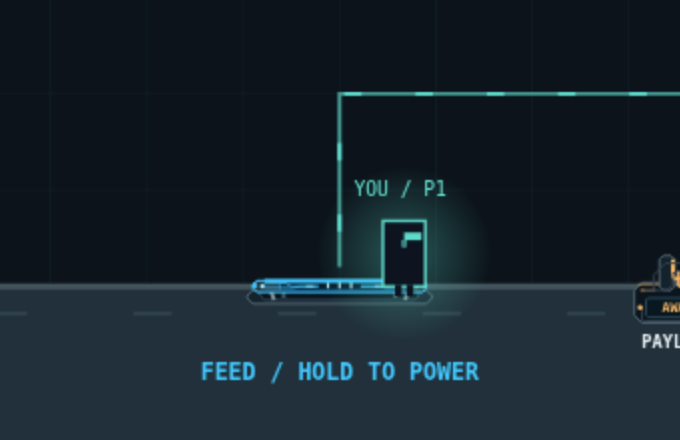
A layered, compressible button with sequenced circuitry.
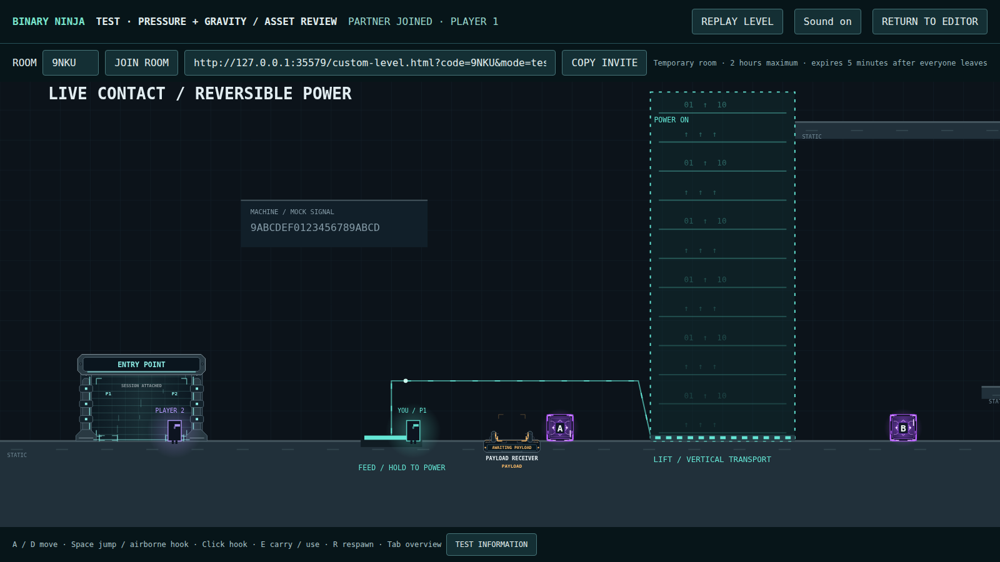
Rectangular dashed boundary and repeated line/glyph pattern.
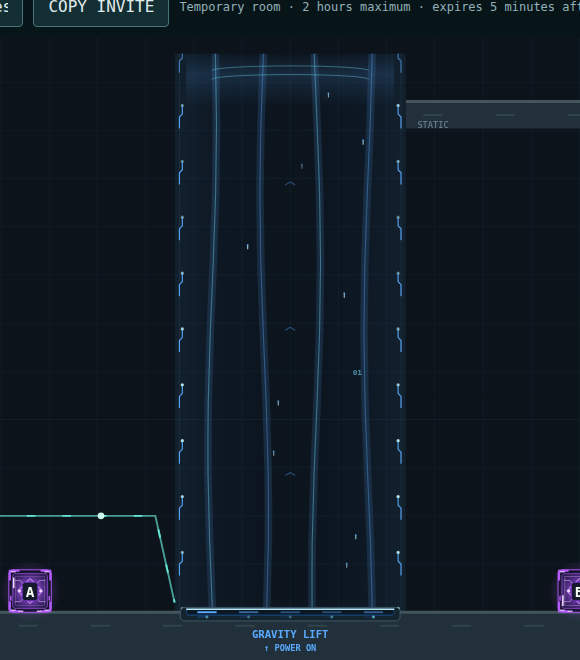
Transparent flowing ribbons, guide nodes and upper convergence.
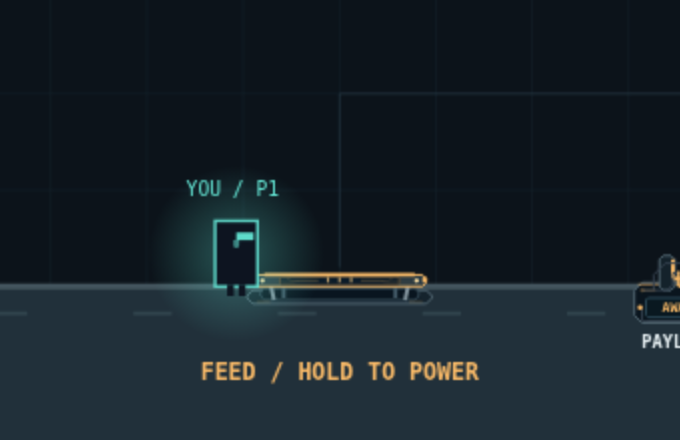
Recessed base, beveled tread and exposed suspension.
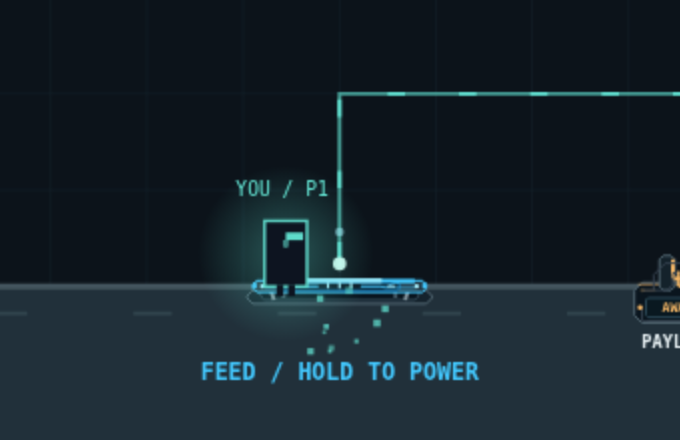
Accepted contact starts 140 ms of cosmetic travel.
Depressed top and illuminated cyan-blue traces.
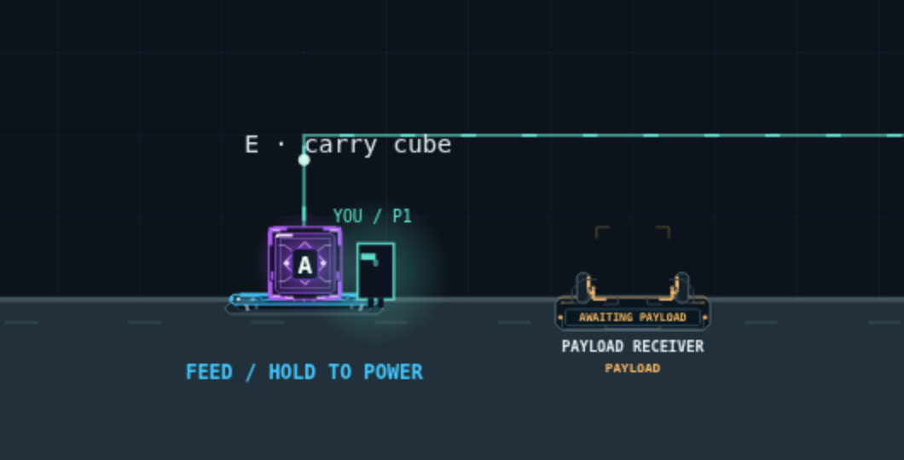
A resting cube supplies weight without becoming a green docked payload.
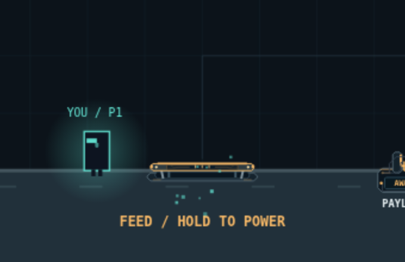
The tread rises and amber returns as contact ends.
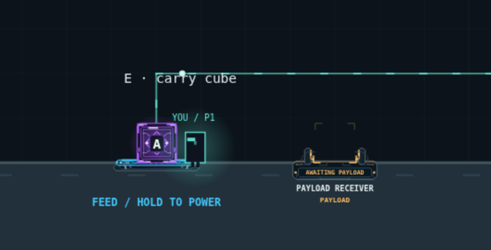
Flat weight-sensitive button beside the upright cube-only cargo interface.
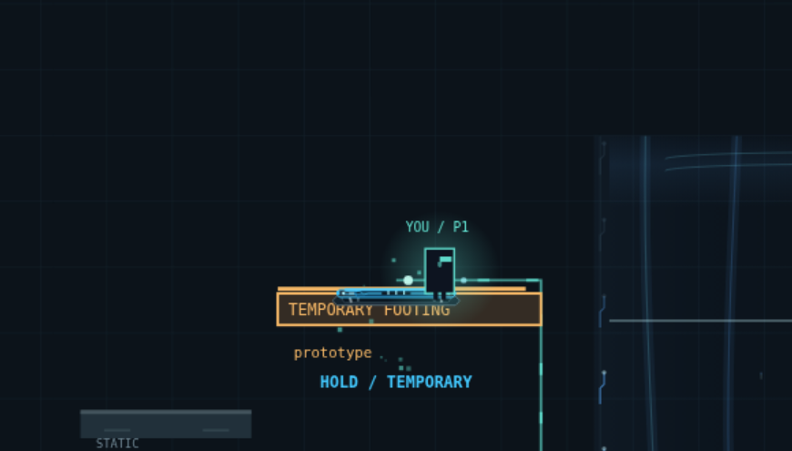
Real player contact powers the route while the footing crumbles.
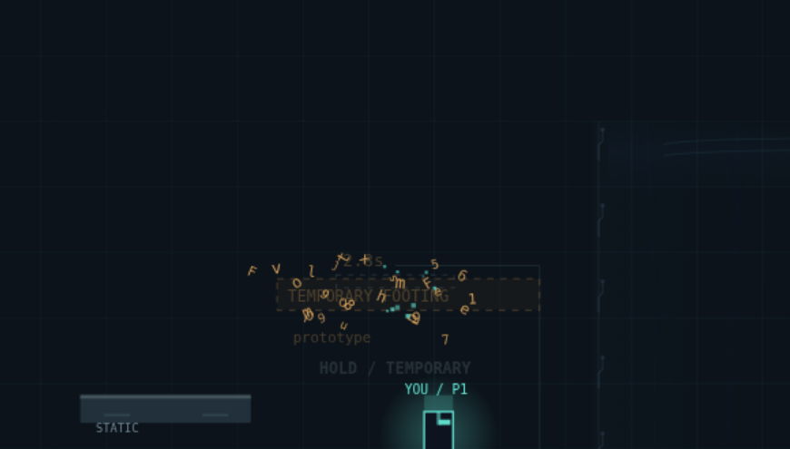
Accepted power releases; the unsupported pad becomes a faint outline.
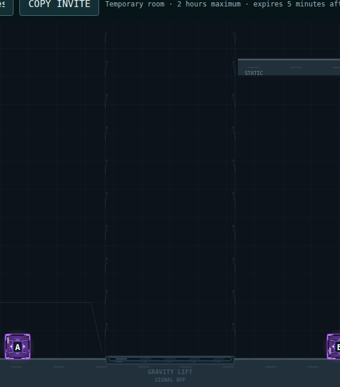
A compact emitter and faint guide circuitry remain visible.
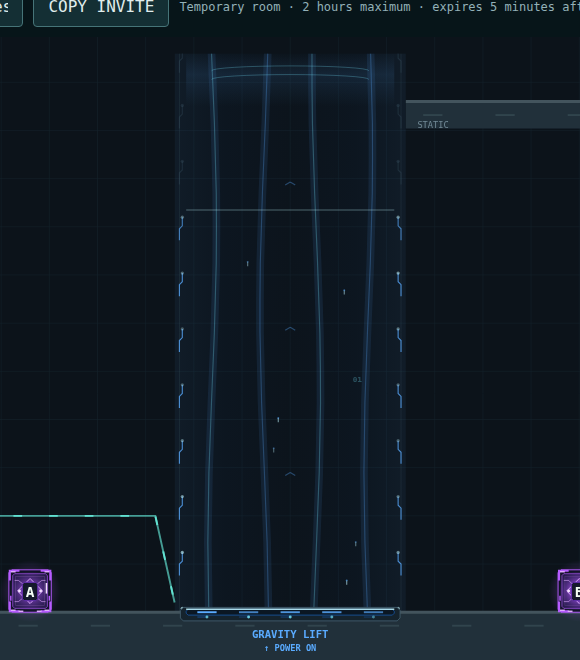
A blue pulse climbs the column. Physical power is already active.
Transparent ribbons, upward flecks and a clear central transport area.
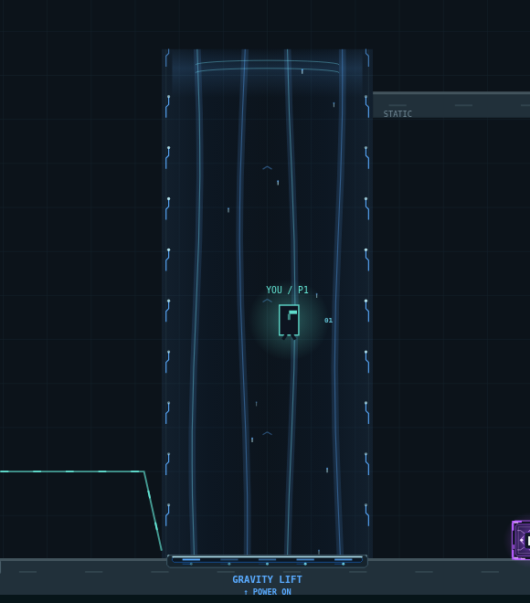
The character remains legible inside the flowing field.
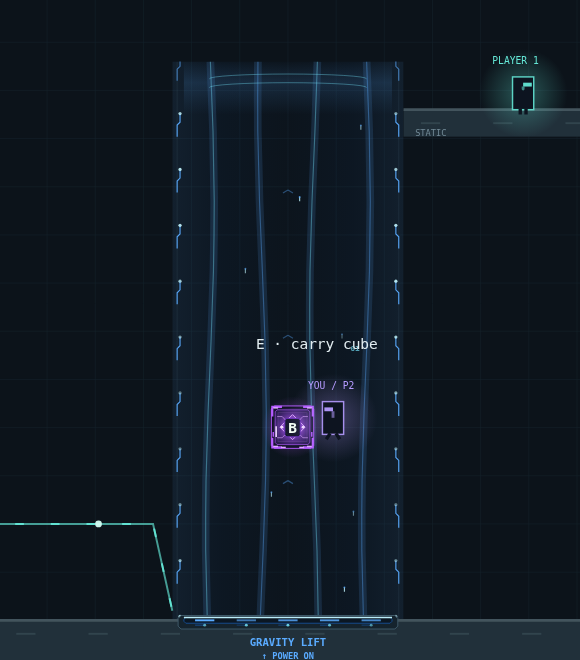
Actual loose cube transport with its purple energy intact.
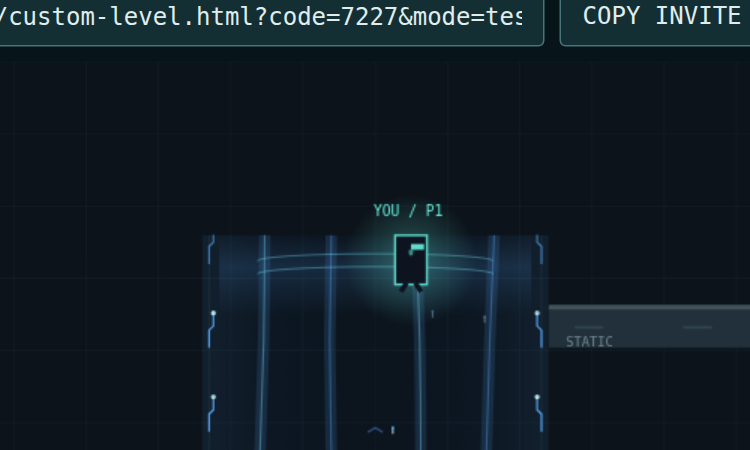
An open convergence arc marks the existing soft hover region.
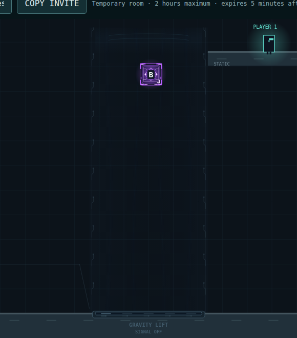
The field fades; physics loses power immediately.
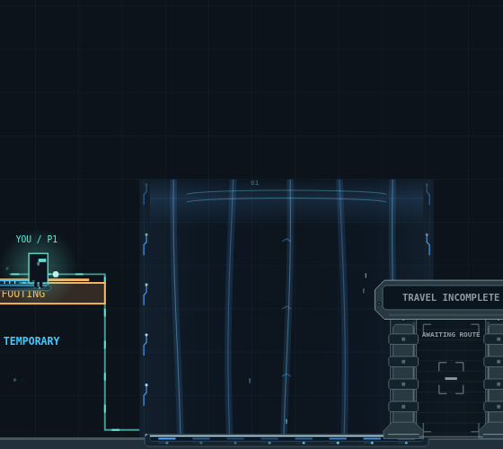
The same bounded asset scales to a broad transport field.
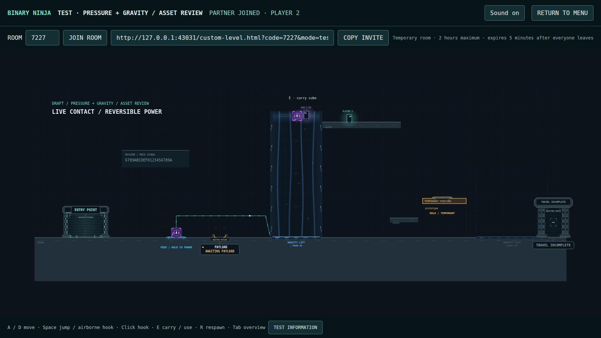
Sparse detail retains distinct controls, cargo and transport.
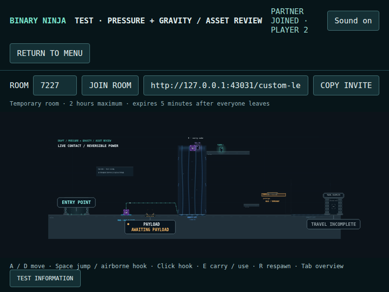
Overview on a smaller client viewport.
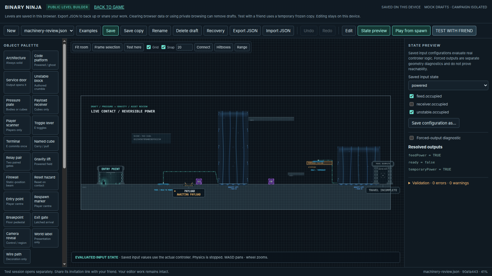
Explicit diagnostic preview using the shared production renderer.
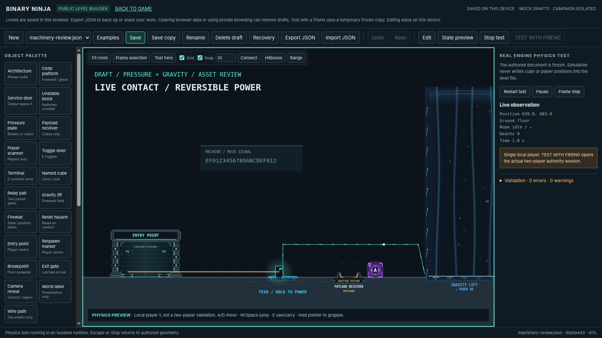
Single-player keyboard walking powers the same machinery.
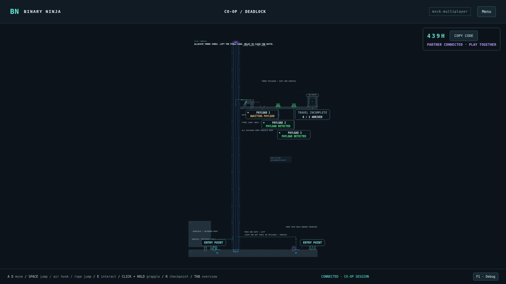
The unchanged authored-start route before the final operator handoff.
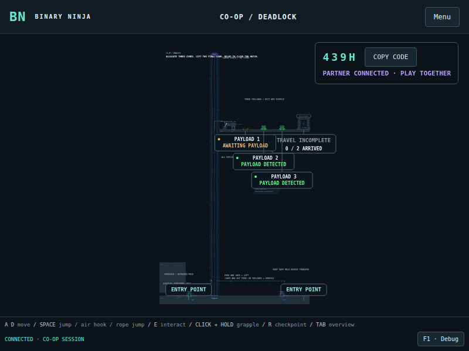
Tall shaft, two operators and the staged final payload.